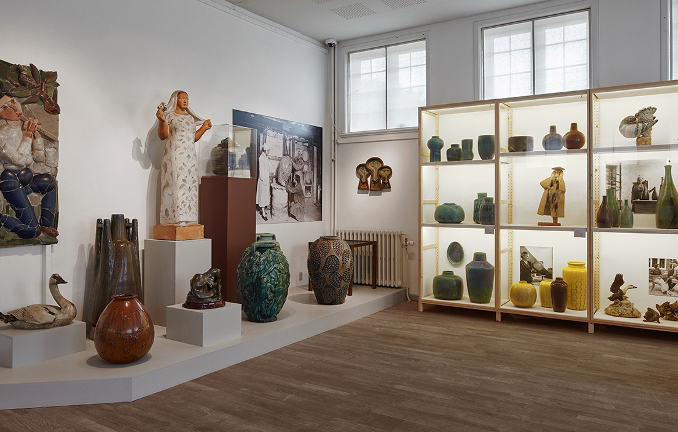

SAXBO udstilling på Vejen kunstmuserum
Knap 1300 udstillede værker er en del af museet
I 100-året for kvindernes valgret kommer Vejen Kunstmuseums hovedudstilling til at handle om et af Danmarks bedst kendte keramiske værksteder, SAXBO, der blev etableret, opbygget og drevet af Nathalie Krebs (1895-1978). Hun var en kvinde med høje ambitioner og en utrolig arbejdsindsats. Hun nåede at modtage megen hæder for sit virke og var i 1951 blandt de første kvindelige modtagere af Dannebrogsordenen.
Vis mig detteUdstilling SAXBO 90 på Gammelgaard
Fortællingen om Nathalie Krebs og et stykke dansk kulturarv
SAXBO 90 og fortællingen om Nathalie Krebs er efterårets store udstilling på Gammelgaard, og fredag 13. september åbner vi udstillingen med en storslået fernisering efter fyraften, hvor alle er velkommen. Udstilingen SAXBO keramik i er anledningen af det i år er 90 år siden
Nathalie Krebs åbnede sit keramikværksted på SAXBO.